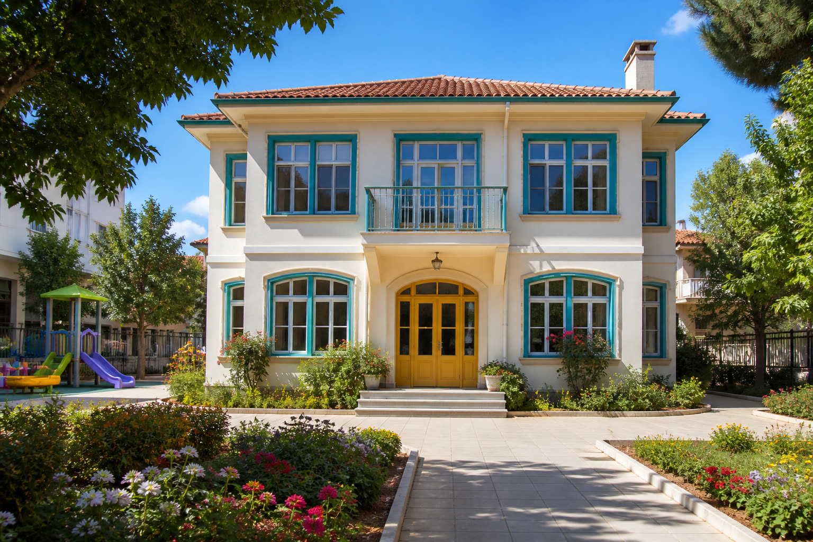

☀️
Oyun temelli gün
Müfredatımız bloklar, boya, müzik ve açık hava ile kurulur. Çocuk temposuna göre ilerleriz.
Kadıköy · 2–6 yaş · 2012'den beri
Güneş Bahçesi'nde çocuklar oyunla öğrenir, bahçede keşfeder, masal dinler ve günün sonunda evlerine toz pembe yanaklarla döner.

Neden biz?
Müfredatımız bloklar, boya, müzik ve açık hava ile kurulur. Çocuk temposuna göre ilerleriz.
Her gün dışarı çıkarız. Fideler, kum, tahta ev ve koşacak yer var.
Sınıf başına en fazla 12 çocuk. Her minik görülür, duyulur, kucaklanır.
Kahvaltı, öğle ve ikindi okul mutfağında pişer. Alerji listesi titizlikle tutulur.

Moda'da bir bahçe
2012'de eski bir ahşap evi çocuklara göre yeniledik. Alçak pencereler, yumuşak köşeler, bol ışık ve her katta bir okuma köşesi var.
Yaş grupları

24–36 ay · bağlanma, ritim, duyusal oyun

3–4 yaş · soru sormak, paylaşmak, denemek

4–5 yaş · proje, atölye, arkadaşlık

5–6 yaş · okula yumuşak geçiş
Kadromuz


Velilerimizden
“Deniz ilk hafta ağlamadı bile. Akşam ‘yarın bahçeye gidecek miyiz?’ diye soruyor. Bu cümle her şeyi anlatıyor.”
Ece A. · Minikler velisi
“Öğretmenler isimleri, alerjileri, hatta en sevilen oyuncağı biliyor. Küçük okulun farkı tam da bu.”
Mert & Nihan K. · Keşif velileri
“Hazırlık sınıfı ilkokulu korkutmadan tanıttı. Kızımız kalemi sevmeye başladı, masayı değil.”
Zeynep T. · Hazırlık velisi
Kontenjan sınırlı. Ön kayıt formu 2 dakikanızı alır; ardından sizi okula çaya davet ederiz.